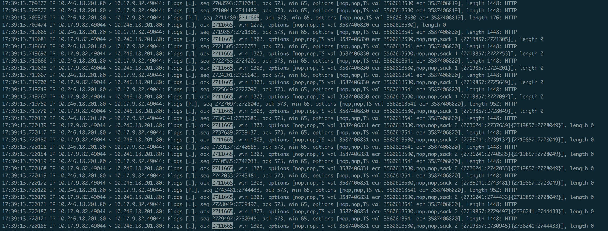
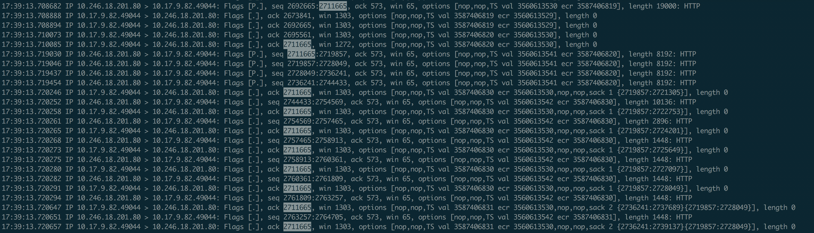
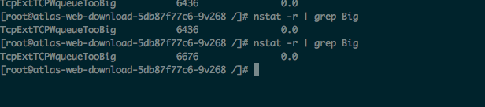
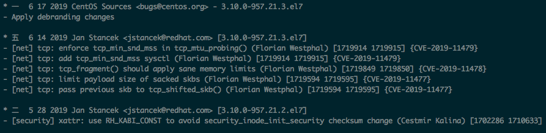

一、背景
前段时间，我们将私有云存储内容迁移到了某公有云存储，由于协议不兼容的原因，我们在业务及公有云存储中间搭建了一层代理服务做协议转换。在流量切换之后，发现约有0.05%的请求出现读内容超时的情况。大致表现就是对于一些下载请求，代理服务响应了Header 200，但在传输body的时候，出现了超时。
二、抓包分析
通过在代理服务（服务端）和负载均衡层Ingress（客户端）抓包发现，主要的问题是对于一些丢包，服务端没有进行重传（Retransmission）导致最后客户端一直没有收到完整的包直到超时。具体抓包如下：
从以下客户端抓包可以看到，客户端没有收到 [2711665,2719857] 这个包，因此一直在对 2711665进行ack，而服务端确实有收到大量的Duplicate ACK ack 2711665，但问题是为什么没有触发服务端的快速重传呢？ 查看 /proc/sys/net/ipv4/tcp_reordering 的值为3，所以可以确认服务端是有开启快速重传的，在收到3次duplicate ACK后就应该进行快重传，但从抓包文件中并没有发现有触发快速重传。
客户端抓包： 
服务端抓包： 
再通过 nstat 发现TcpExtTcpWqueueTooBig值较为异常

通过google搜索TcpExtTcpWqueueTooBig这个关键字，发现 Adventures in the TCP stack: Uncovering performance regressions in the TCP SACKs vulnerability fixes 这篇博文描述的问题和我们所遇到的基本一致。查看服务端内核版本为 3.10.0-957.21.3.el7.x86_64，再通过查看内核Changelog发现该版本正是刚好打完CVE-2019-11477, CVE-2019-11478 & CVE-2019-11479 这三个补丁

之后通过升级内核版本至 3.10.0-1062.1.1.el7.x86_64 后发现问题得到了解决。
三、问题分析
TCP SACK PANIC - Kernel vulnerabilities - CVE-2019-11477, CVE-2019-11478 & CVE-2019-11479 这三个补丁是为了解决SACK的安全问题。 在函数 tcp_fragment 中新增了如下代码
if (unlikely((sk->sk_wmem_queued >> 1) > sk->sk_sndbuf)) {
NET_INC_STATS(sock_net(sk), LINUX_MIB_TCPWQUEUETOOBIG);
return -ENOMEM;
}
从重传代码中发现当socket buffer长度大于MSS（最大报文长度）时，会先执行函数tcp_fragment，当以上代码if模块为true时，则会导致重传被中断，表现也就是我们上面抓包看到的收到了3次Duplicate ACK，却没有进行Retransmission的情况。更加具体的分析可以查看这篇博文Adventures in the TCP stack: Uncovering performance regressions in the TCP SACKs vulnerability fixes
四、参考
https://runsisi.com/2019-12-19/tcp-sack-hang
本文地址